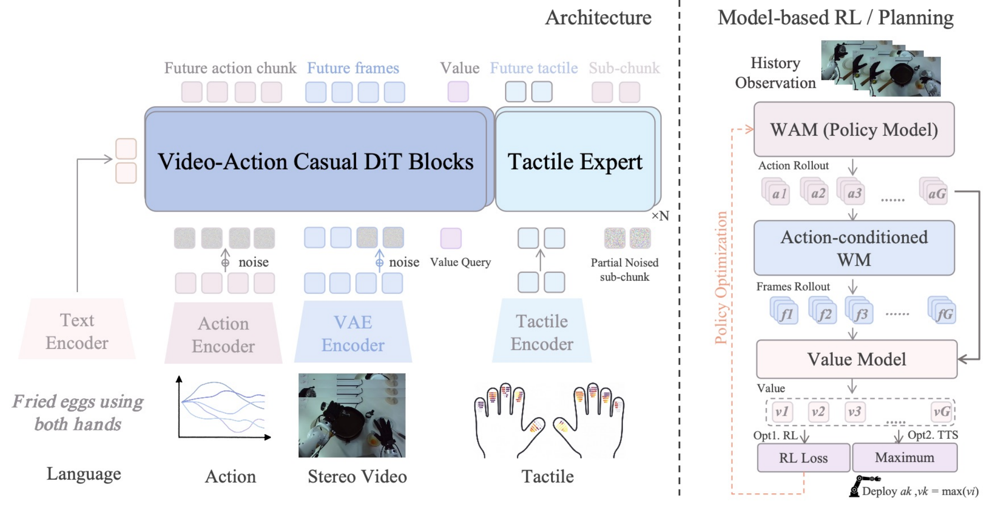
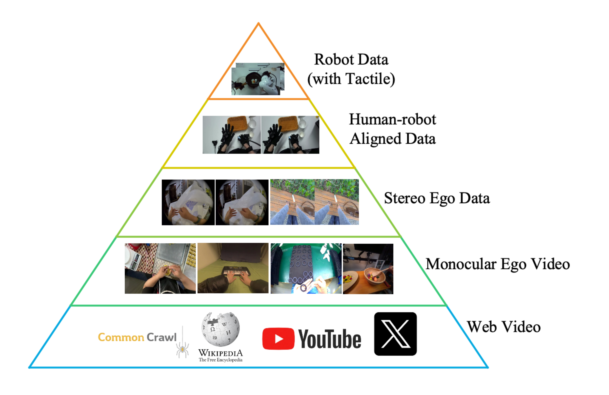
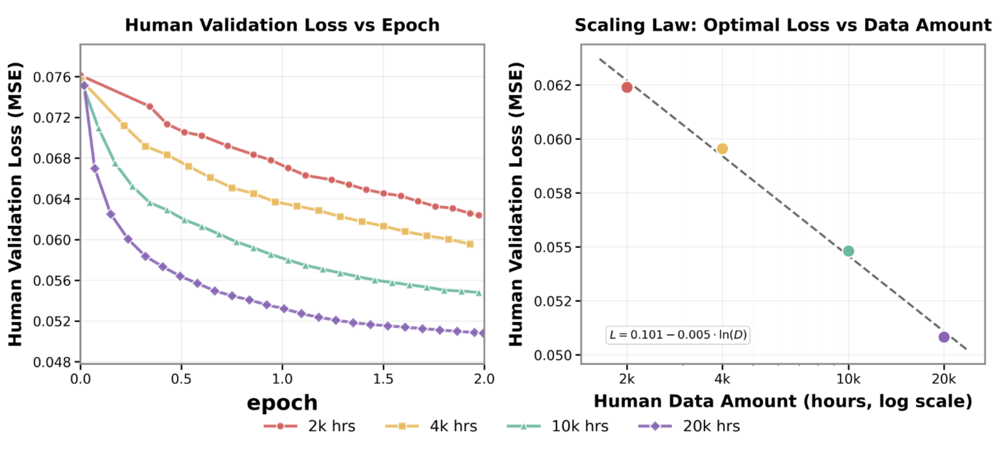
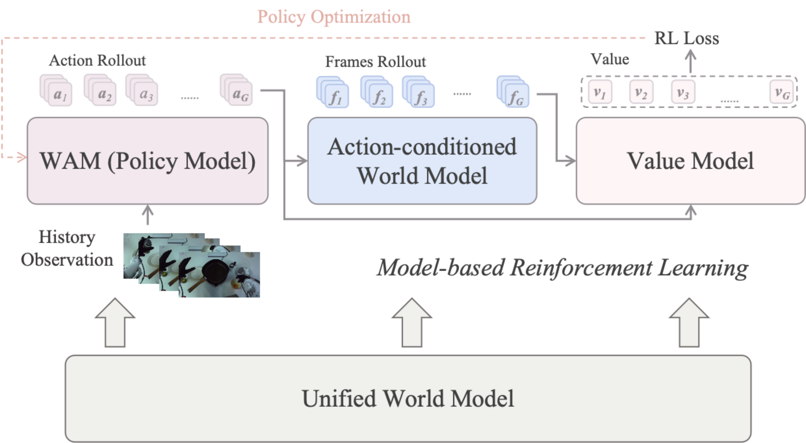
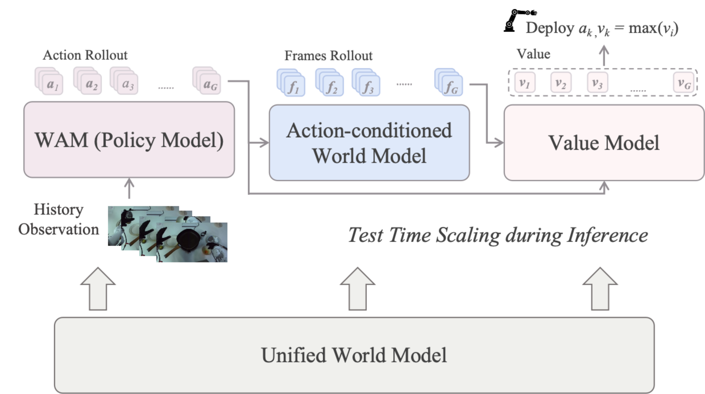
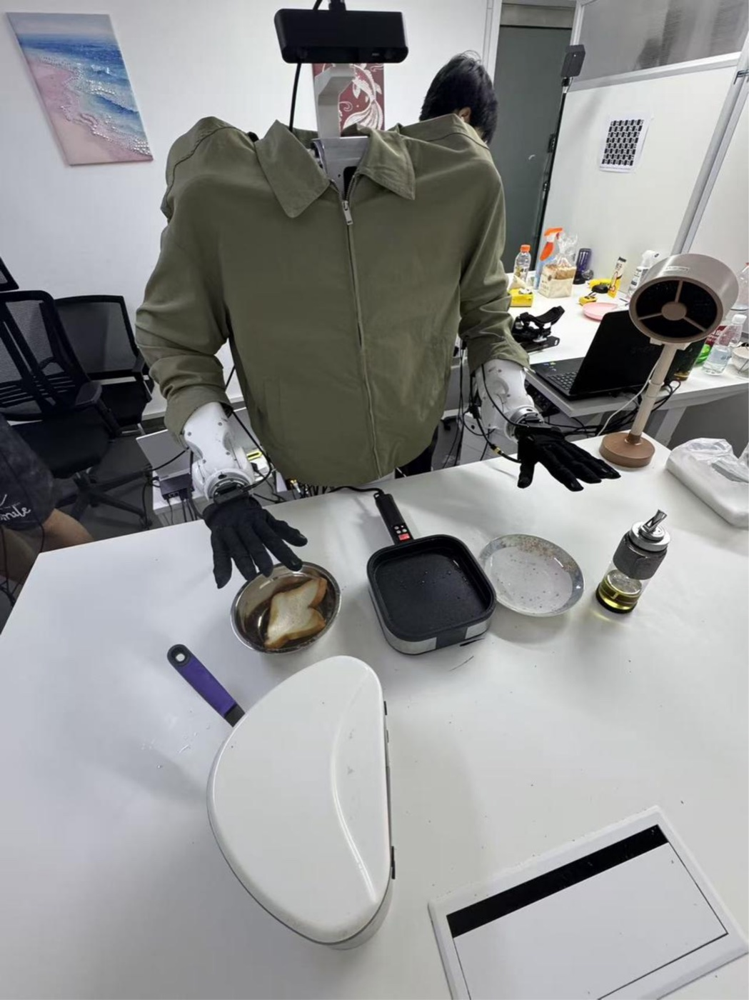
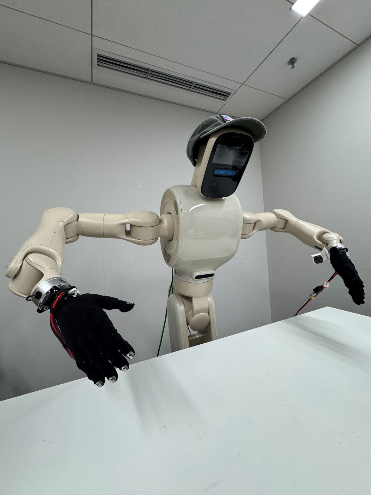
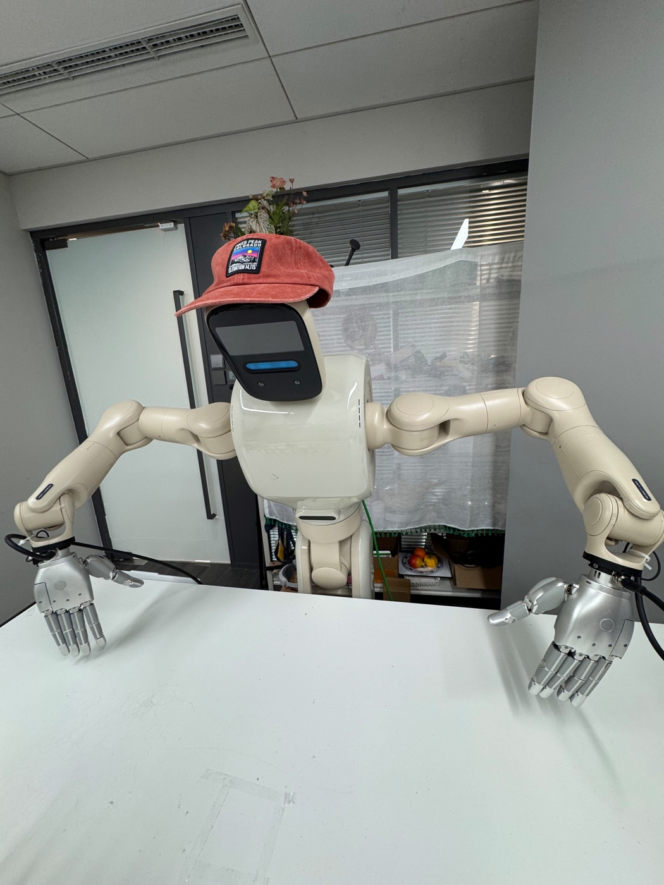

Planner
World-action model / policy that proposes executable action chunks.
Motus2
Motus2 scales dexterous manipulation along two complementary axes: data scaling through a hierarchical egocentric human-data pyramid, and model scaling through a Unified World Model. With one shared set of weights, the model proposes actions, predicts their visual consequences, and evaluates imagined trajectories, forming a closed decision-and-learning loop for planning and policy improvement. Motus2 further extends joint video-action modeling with a lightweight tactile expert for tactile-conditioned action refinement and tactile prediction.
TL;DR
Real-Robot Rollouts
Choose an embodiment and capability, then select a task.
Align, rotate, and secure a light bulb.
Architecture
Embodied control often separates action proposal, future prediction, and value estimation into unrelated networks. Yet all three operate on the same interaction evidence: a candidate action, its predicted consequence, and the resulting task progress. Motus2 brings them together in one shared-parameter video-action backbone.
The planner proposes executable action chunks, the simulator predicts their visual consequences with an action-conditioned world model, and the evaluator estimates task progress or value to rank imagined trajectories. These three functional roles are realized by one video-action backbone with a single shared set of weights, rather than separate architectures.
World-action model / policy that proposes executable action chunks.
Action-conditioned world model that predicts future visual consequences.
Value model that scores imagined trajectories for selection and learning.

Training Interface
Motus2 uses two stage-specific visibility patterns. Stage 2 stereo human pretraining uses a joint mask with bidirectional video-action interaction inside each chunk. Mid-training and post-training use an action-first mask: actions cannot read the current future-video or value tokens, while future-video and value targets may condition on the action.
Planning, simulation, and evaluation are supervision roles under the shared action-first layout rather than separate attention masks. Both masks remain causal across chunks. Tactile signals are handled by the separate tactile expert and do not enter these masks.


Figure 2: Stage-specific chunk masks. Context (C), video (Z), action (A), and value (V) tokens share one backbone. Joint pre-training permits bidirectional video-action interaction within a chunk. The action-first mask used from mid-training onward blocks current future-video information from action prediction, while future-video and value targets may read the action. Both remain causal across chunks.
Scaling Path
Motus2 scales through a hierarchical human data pyramid: approximately 130K raw recording hours progress from low- and high-resolution monocular egocentric video to synchronized stereo human video-action data. Robot-domain mid-training then uses more than 100 hours of robot trajectories and supplementary human-robot alignment data. Together, these stages provide shared experience for the planner, simulator, and evaluator before target-task post-training.

Increasing stereo egocentric human data consistently reduces held-out action-prediction error. Across subsets constructed from 2K, 4K, 10K, and 20K raw recording hours, larger datasets converge to lower validation error within the measured range.

Self-Evolving
Pretraining gives Motus2 a shared interaction prior; model-based reinforcement learning closes the decision-and-learning loop on robot data. Under a bounded sliding-window context, the planner proposes candidate action chunks, the simulator predicts their visual consequences, and the evaluator scores the resulting branches. DiffusionNFT uses the same value signal to improve the policy distribution during post-training.
Curated demonstrations provide action-learning targets. Failed, suboptimal, and out-of-distribution interactions remain useful as transition and value supervision for world simulation and value learning.

Best-of-N planning spends additional inference compute without changing the model weights. The planner samples candidate action chunks, the simulator predicts a future for each candidate, and the evaluator ranks the branches before one action is executed.
Increasing the number of candidates broadens the search over predicted outcomes. The highest-value branch is selected for execution, after which planning is repeated from the next real observation.

Predicted task progress is visualized along Turn Bulb trajectories. The successful trajectory rises toward task completion, whereas failed trajectories decline after progress is lost.

Memory
Motus2 uses a bounded sliding window as its default context and evaluates two extensions: full-history global autoregression and a MemoryWAM-style Hybrid Memory with recent frames, persistent anchor frames, and compressed memory tokens. Their task performance is compared on long-context simulation and real-robot probes; the MBRL experiments use the sliding-window setting.
Tactile Sensing
The action-first backbone first produces an intermediate action chunk and a detached layer-wise KV cache. A lightweight tactile expert reuses both to refine short action sub-chunks from the most recent tactile measurements. The expert is trained for tactile-conditioned action refinement together with tactile prediction.
The backbone denoises the complete action chunk to a fixed intermediate state.
Layer-wise backbone features are reused across rolling sub-chunk updates.
Recent tactile measurements refine each short action sub-chunk.
The expert also predicts the tactile feature following the action sub-chunk.
Robot Systems



Three bimanual robot configurations are used for data collection and post-training. The separate human-robot alignment collection uses Wuji Human Gloves and does not command a robot.
Team
Partners
WuJi · Sharpa · Tianji
Ropedia · EgoScale · LightWheel · JD-Group · CyberOrigin
Current preprint: Motus2: A Self-Evolved Egocentric Embodied Agent (PDF)
@misc{bi2026motus2,
title = {Motus2: A Self-Evolved Egocentric Embodied Agent},
author = {Hongzhe Bi and Jingrui Pang and Zihao Zhou and Yihang Tang and
Shuhe Huang and Haitian Liu and Runqing Wang and Shuai Huang and
Yichen Wang and Yiming Cheng and Ruowen Zhao and Zhenghua Li and
Xiaolong Liu and Jinhui Wan and Jiabao Liu and Min Zhao and
Fan Bao and Jun Zhu},
year = {2026},
url = {https://motus-robotics.github.io/motus2/assets/paper/Motus2.pdf},
note = {Preprint}
}